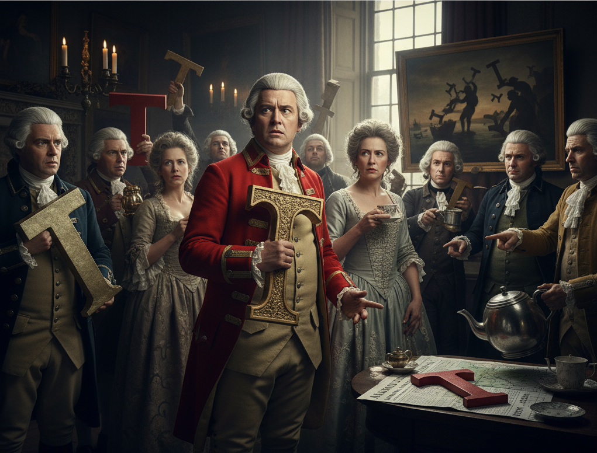

Mystery Solved: Research uncovers why British no longer pronounce the letter T

Boston, MA — A stunning new discovery by the Colonial Language Recovery Project may finally explain why so many British mysteriously drop their T’s when speaking. Researchers claim the phenomenon traces back to none other than the Boston Tea Party of 1773.
According to the team’s findings, the event caused such widespread embarrassment across Britain that the nation subconsciously “abandoned” the letter T as a symbolic gesture of disassociation. “It was a national trauma,” said linguist Dr. Paige Turner. “After losing so much tea, they simply couldn’t bear to pronounce the word properly anymore.”
Historical documents reveal that in the months following the infamous harbor incident, shipping logs, tavern menus, and even royal decrees began omitting the letter entirely. By 1774, everyday citizens had started speaking in what historians now describe as “Tea-less English.”
“They didn’ wan’ to talk abou’ i’,” Dr. Turner explained. “So they stopped saying their T’s altogether. Words like ‘bottle’ became ‘bo’le,’ and ‘butter’ became ‘bu’er.’ It was a linguistic rebellion fueled by caffeine withdrawal.”
Modern linguists in the UK have greeted the news with mixed emotions. “I can’ say I’m surprised,” said Londoner Daniel Cook, known for his notably T-free accent. “I never though’ I was carryin’ on a colonial grudge — bu’ i’ makes sense.”
Scholars now plan to extend their research to other cultural side effects of the Revolution, including whether Americans’ excessive use of the letter R was an act of overcompensation.